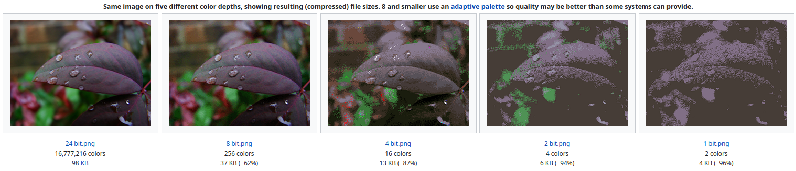

Programme Officiel
| Contenus | Capacités attendues |
|---|---|
| Photosites, pixels, résolution(du capteur, de l’image), profondeur de couleur. | Distinguer les photosites du capteur et les pixels de l’image en comparant les résolutions du capteur et de l’image selon les réglages de l’appareil. |
| Métadonnées EXIF | Retrouver les métadonnées d’une photographie. |
| Traitement d’image | Traiter par programme une image pour la transformer en agissant sur les trois composantes de ses pixels. |
| Rôle des algorithmes dans les appareils photo numériques | Expliciter des algorithmes associés à la prise de vue. Identifier les étapes de la construction de l’image finale. |
Vidéo servie sans cookie via Project Segfault
Faire l’évaluation diagnostique sur les images numériques PP102-103 du manuel Delagrave.
Les images numériques
Il existe deux principaux types d’images numériques:
- Les images matricielles dans lesquelles l’image est décrite par une suite de pixels colorées: les formats
jpg,png,gif,webp,avif… - Les images vectorielles dans lesquelles l’image est décrite par les formes contenues dans l’image: le format
svgprincipalement.
Définition d’une image
- Définition d’une image
-
La définition d’une image matricielle est le nombre de pixels de l’image.
- Format Full HD : 1 920 × 1 080
- Format 4k: 3 840 × 2 160
À ne pas confondre avec la résolution de l’image qui s’exprime en pixels par pouce qui mesure la qualité d’une image affichée ou imprimée.
Calculer la définition des images Full HD et 4K sans calculatrice.
Codage des couleurs
En informatique, il existe différentes façons de coder les couleurs, pour s’en rendre, il suffit d’ouvrir un sélecteur de couleur sur votre ordinateur pour s’en rendre compte.
- Système RVB
-
Un des systèmes les plus courants de codage des couleurs en informatique est le système RVB (pour Rouge Vert Bleu) qui code les intensités des composantes rouge, verte et bleue d’un pixel en synthèse additive des couleurs.
Références des systèmes de couleurs sur MDN
Encore une fois, consultez cette page sur l’excellent site MDN pour en savoir plus.
- Profondeur des couleurs
-
La profondeur de couleurs est le nombre de bits utilisés pour représenter la couleur d’un pixel dans une image.
- 1 bit: 0 ou 1 pour Noir et Blanc.
- 1 octet: niveaux pour les images en niveau de gris.
- 3 octets: 1 octet pour chaque composante rouge, verte et bleue pour les images en
jpeg. (voir cette animation) - 6 octets: 2 octets pour chaque composante rouge, verte et bleue pour les images en
tiffouraw.

En utilisant cette animation. Répondre aux questions suivantes.
Combien de niveaux de couleurs peuvent être codées sur 3 octets?
En notant (R, G, B) les couleurs sur 3 octets, expliquer comment obtenir:
- du rouge:
(255, 0, 0) - du vert:
- du bleu:
- du jaune:
- du magenta:
- du cyan:
- du noir:
- du blanc:
- du rouge:
Les métadonnées
- Métadonnées
-
En plus des données concernant les couleurs des pixels de l’image, les photographies numériques contiennent de nombreuses informations concernant la prise de vue:
- la date
- l’heure
- l’appareil utilisé pour prendre la photo
- les paramètres de la prise de vue(flash, vitesse…)
- la géolocalisation si disponible
Un des formats de métadonnées couramment utilisé dans les photos est le format EXIF.
Citer au moins cinq métadonnées présentes dans la photo présentée sur cette page: